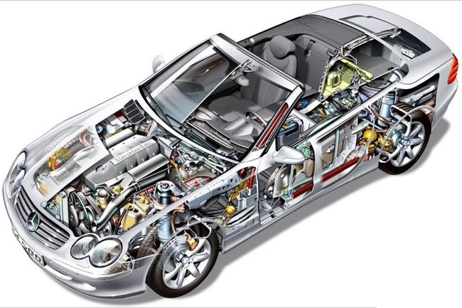
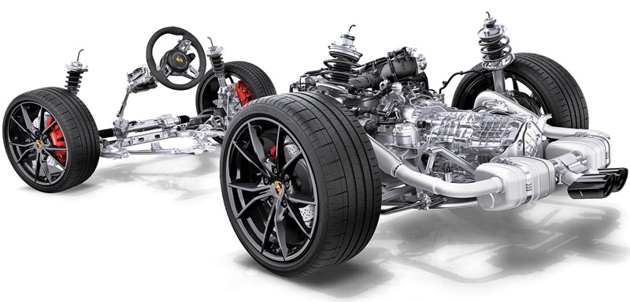
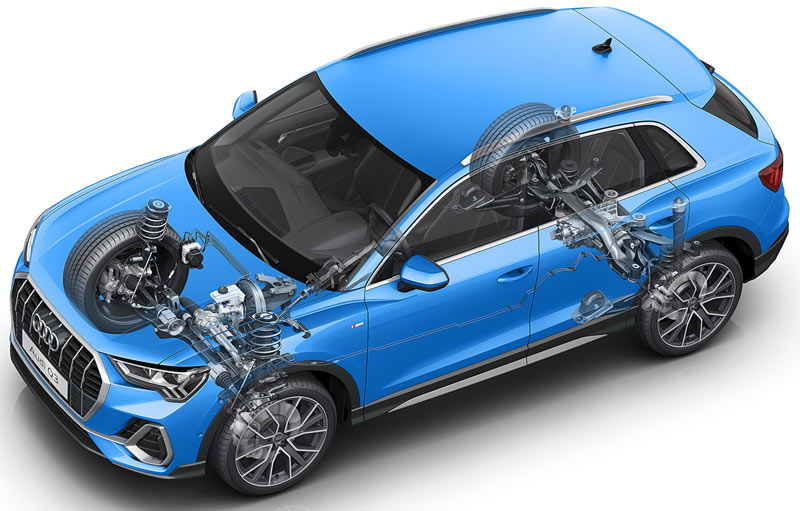

Топ автомобилей
Топ-10 лучших автомобилей мира
Лучшие автомобили 2023 года.
В новом списке впервые преобладают гибриды, а не чистые электромобили, и, что интересно, 40% топ-листа заняли японские бренды.
В топ-10 лучших авто вошли три японских модели Toyota, и две из них расположились на первом и втором местах — это Toyota Corolla Hybrid и Toyota Corolla Cross. Третье место досталось Subaru Forester — автомобилю с бензиновым двигателем. Ford Maverick Hybrid и Toyota Camry Hybrid замыкают пятёрку самых популярных машин. Вот так выглядит полный список:
- Toyota Corolla Hybrid
- Toyota Corolla Cross
- Subaru Forester
- Ford Maverick Hybrid
- Toyota Camry Hybrid
- Nissan Leaf
- Hyundai Santa Fe Hybrid
- Kia Telluride
- Lexus NX350h Hybrid
- Tesla Model 3
Таким образом, 7 из 10 моделей полностью или частично электрифицированы. В прошлом году ситуация была почти обратной: четыре электромобиля и шесть авто с ДВС. Сугубо электрических авто в списке пока только два, причём оба разместились на последних местах. А глядя на растущие тренды по борьбе с СО2, вполне возможно, что к 2024 году в списке и вовсе не останется моделей с двигателем внутреннего сгорания.
Что внутри
ОБЩИЕ СВЕДЕНИЯ О МАШИНАХ
Легковой автомобиль состоит из:
Автомобиль поедет только тогда, когда колеса начнут крутиться. А что заставляет их вращаться? Каким образом двигатель автомобиля передает крутящий момент на колеса?
Двигатель сжигает топливо и преобразует тепловую энергию сгорания во вращательное движение коленчатого вала, далее вращение передается через трансмиссию на ведущие колеса, которые являются элементом ходовой части автомобиля и машина поехала. Во время движения водитель пользуется рулем и тормозами (механизмы управления), включает лампочки и подает звуковые сигналы (электрооборудование) и сидит на водительском сиденье, пристегнутый ремнями безопасности.
Все вышеперечисленное объединяет кузов автомобиля, без которого агрегаты, механизмы и даже сиденье водителя лежали бы огромной кучей. Вот это и есть автомобиль. А теперь, начнем вникать в назначение, принципы работы, детали и возможные неисправности вышеуказанных частей авто.
Двигатель - это агрегат, в котором тепловая энергия сгорающего топлива преобразуется в механическую энергию (в виде вращения коленчатого вала).
Трансмиссия предназначена для передачи и изменения крутящего момента от двигателя к ведущим колесам. Она включает:
Ходовая часть предназначена для перемещения авто по дороге с определенным уровнем комфорта без тряски и вибраций, и включает:
Механизмы управления служат для изменения направления движения, остановки и стоянки автомобиля. К ним относятся:
Электрооборудование предназначено для обеспечения электрическим током всех электрических приборов автомобиля, и состоит из:
Дополнительное оборудование обеспечивает комфортные и безопасные условия для водителя и пассажиров. Примером могут служить: отопитель салона, омыватель и очиститель ветрового стекла, электроподогрев стекол и многое другое.
Кузов является несущим элементом автомобиля, на котором крепятся двигатель, агрегаты трансмиссии, ходовой части, механизмы управления, а также размещаются водитель, пассажиры и груз.
Чтобы легче ориентироваться в специальной терминологии, можно связывать её с известными предметами. Для этой цели подойдет обычный велосипед. Функцию двигателя при езде на велосипеде выполняет сам велосипедист. Через цепь (трансмиссия) вращение от педалей передается на колесо (ходовая часть). Для выполнения поворотов и остановок служат руль и тормоза велосипеда (механизмы управления). Включая свет в лампах, используете электрооборудование. А рама велосипеда составлят кузов.
КАКИЕ БЫВАЮТ АВТОМОБИЛИ
В зависимости, на какие колеса передается крутящий момент от двигателя, автомобили делятся на:
- заднеприводные,
- переднеприводные,
- полноприводные.
ЗАДНЕПРИВОДНЫЕ
Это автомобили, у которых крутящий момент от двигателя передается на задние колеса. Пример - модели «Жигулей» от ВАЗ-2101 до ВАЗ-2107. Задние колеса у них являются ведущими, и именно они, отталкиваясь от покрытия дороги, двигают перед собой автомобиль. Передние колеса являются лишь направляющими (ведомыми) и служат для изменения направления движения. Можно сразу отметить, что заднеприводным автомобилям труднее сохранять прямолинейное движение на скользкой дороге, по сравнению с переднеприводными.
Для подтверждения попробуйте взять карандаш и, толкайте его сзади по столу, чтобы он двигался прямолинейно. Сделать это трудно, так как передняя часть карандаша будет постоянно отклоняться от своей траектории. Для компенсации этого отклонения придется маневрировать задней частью карандаша. А в примере с велосипедом - это и есть обычный велосипед, где вращение от педалей через цепь передается заднему колесу.
ПЕРЕДНЕПРИВОДНЫЕ
Автомобили, у которых крутящий момент от двигателя передается на передние колеса. Среди автомобилей ВАЗа переднеприводными являются модели, начиная от ВАЗ-2108. У этих автомобилей передние колеса являются как ведущими, так и направляющими. Задние колеса не выполняют никакой функции (кроме связи кузова с дорогой), они просто катятся по дороге. А передние колеса вовсю работают - получают энергию от двигателя, вращаются и «тянут» машину, направляя ее при этом по выбранной водителем траектории. Автомобили с передним приводом более устойчивы на дороге, чем заднеприводные.
Теперь возьмем карандаш и будем его не толкать, а тащить вперед за кончик. Посмотрите, как легко стало перемещать его по плоскости стола в любом направлении, в том числе и прямо. В примере с велосипедом, выбрасываем неудобную цепь и крутим педали на переднем колесе, вращая именно его. Самые юные обладатели трехколесных транспортных средств используют именно передний привод.
Какой привод лучше? Самые быстрые в мире автомобили имеют привод на задние колёса. Главное преимущество - хорошая загруженность ведущих колёс при ускорении и в поворотах. Это позволяет добиться лучшей управляемости. Ещё одним плюсом можно назвать хорошее распределение массы. С передним приводом сложно добится идеальной развесовки между осями (50:50). Также с передним приводом не получится реализовать все возможности двигателя мощностью выше 250-300 л.с. При резком старте и в поворотах колёса раньше начинают буксовать.
ПОЛНОПРИВОДНЫЕ
Автомобили, у которых передача крутящего момента от двигателя осуществляется одновременно на задние и передние колеса. Таковыми являются ВАЗ-2121 «Нива», «Шевроле-Нива», а также многочисленные «Джипы», которых все больше появляется на дорогах.
У «вездеходов» все четыре колеса получают крутящий момент от двигателя, одновременно «тянут» и «толкают» автомобиль, максимально повышая его ходовые качества. Этот тип привода идеален для сохранения управляемости на скользкой дороге.
Заднеприводные автомобили постепенно вытесняются с рынка машинами с передним приводом, так как последние более удобны и безопасны при эксплуатации и имеют более рациональную конструкцию.